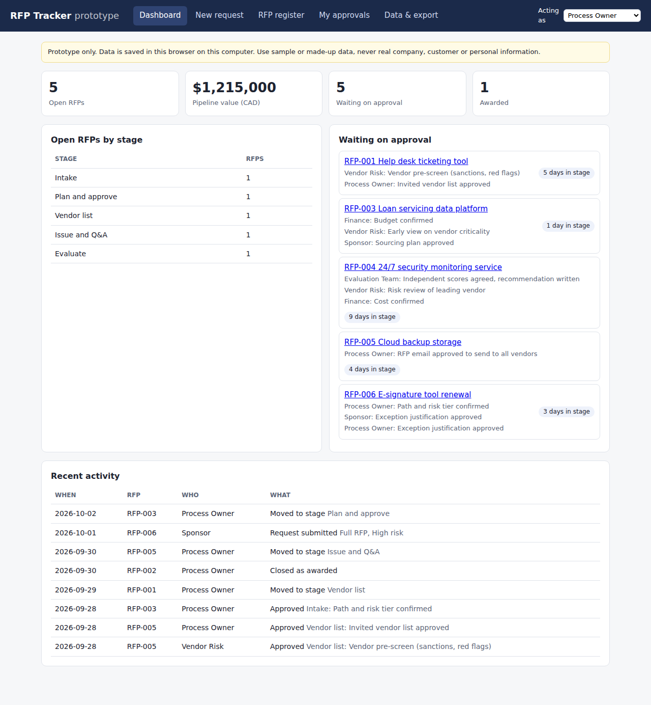
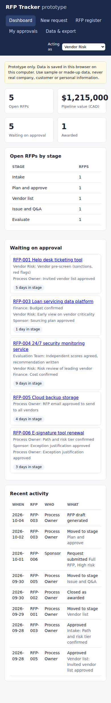
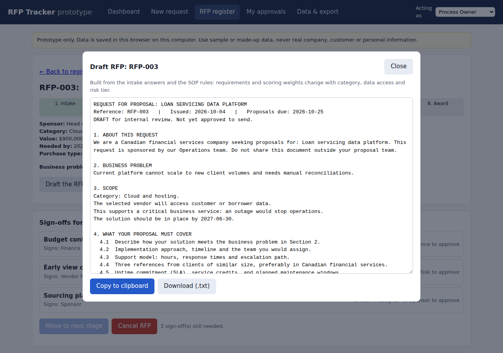

A mid-sized Canadian financial services firm was buying more IT from vendors but had no RFP process and no procurement team. I designed the process first, then built a working app where AI agents draft each stage and people make every decision.
The firm had shifted toward buying software and services instead of building them. Each purchase was handled differently by whoever needed it. That created three risks:
I wrote the procedure before writing any software, so the app would enforce a process people had agreed to rather than invent one. The result was a standard operating procedure with eight stages, three paths sized by value and risk (quick quote, light RFP, full RFP) and a sign-off gate at every stage.
Each orange line is a gate: the RFP can't move on until the named role signs it in the app.
With no procurement team, a team of AI agents does the paperwork and one named human stays accountable. Auditors always get a person's name against each decision.
An early prompt cast the AI as a "procurement specialist", a role the firm doesn't have. Each agent now has the role of whoever really does that work, such as a business analyst at intake or a proposal analyst at evaluation.
Recruiters click freely; their changes stay in their own browser. Only editors can save, and the database itself enforces that with row-level security. The audit log can only be added to.
The page sends only the intake answers. A small server function builds the prompt and calls Gemini, so the key stays hidden and nobody can use it as a free chatbot.
Each session added one tool: database, then logins, then hosting, then AI. With no billing set up anywhere, the worst case is a used-up daily quota, never a bill.
Spend limits and volumes weren't known yet, so they went in as clearly marked placeholders and the work kept moving.
Seven agents are designed in the procedure. Five draft inside the app today, each picked automatically from the RFP's current stage. They share one prompt pattern (role, context, task, rules, output), so the copyable prompt and the live AI draft always match.
| Agent | Works as | Drafts |
|---|---|---|
| Intake | Business analyst | Missing-information questions and a one-page sourcing plan |
| Requirements | Business analyst and RFP writer | 10 to 15 testable requirements, likely vendor questions, gaps |
| Vendor research | Market researcher | Kinds of vendor to invite and a screening checklist |
| Vendor liaison | Communications coordinator | Invitation email, Q&A replies, award and regret letters |
| Evaluation assistant | Proposal analyst | Evidence guide and red flags for evaluators. It never scores. |
| Coordinator | Project coordinator | Planned: reminders and stage hand-offs |
| Reporting | Data analyst | Planned: weekly, monthly and quarterly reports |
Guardrails built in. Every output is a draft for a person to approve. Prompts forbid personal information, client names and invented numbers, and apply Canadian privacy law. Intake text is cleaned and length-capped on the server so a form field can't smuggle in new instructions. The app holds made-up sample data only.
A single-page web app with no install. It reads and writes a hosted Postgres database, and calls the AI through one server function.
If the database is unreachable, the app keeps working from the browser's own copy.



Alongside the app, I produced the procedure, a process roadmap, a costed architecture for running it on the firm's existing Microsoft tools, a leadership pitch and a prompt library that rebuilds every piece in any AI tool. The portfolio app here is a public, unbranded version with made-up data.
Ask the context questions before the first draft. The procedure was revised five times after v1, and every change came from facts that could have been gathered at the start: who the clients and regulators are, who owns the process, and the rules for AI and data. I now open every project with a one-page brief.
An AI's role line is a product decision. The job title in a prompt shapes its tone and assumptions. It should match who really does the work in that organisation.
Put the rules where they can't be skipped. Access rules live in the database and the AI prompt lives on the server, not in the page, so nothing depends on the browser behaving.
Ship one small step at a time. Each tool went in as its own small change that worked on its own, which kept every session finishable in an hour.
Keep a storyboard from day one. Recording each decision and its reason as I went is what made this write-up possible.